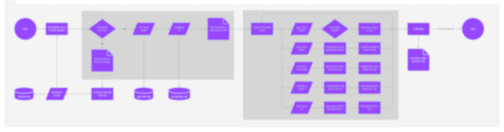
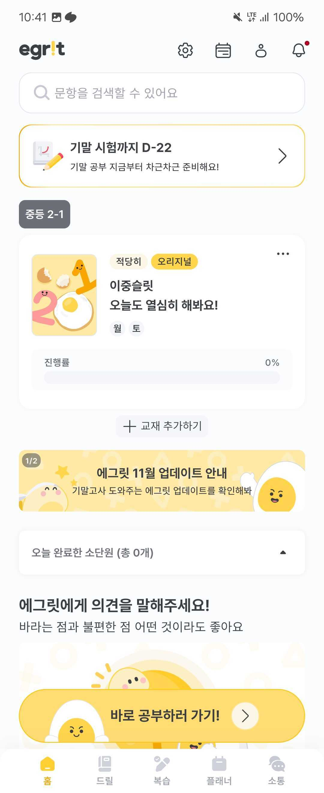
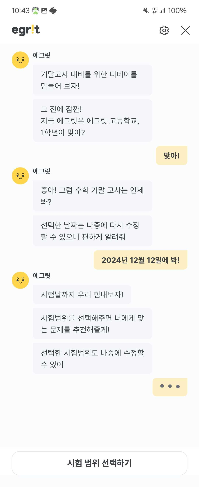

내신 학습관 기획
🗺 기획 배경
아래 내용은 기획 당시의 의도를 정확히 보여드리고자 일부 재구성하여 작성하였습니다.
당시 시장 상황도 함께 작성하였으니, 당시의 상황도 고려하여 읽어주시기 바랍니다.
고객이 직면한 문제
- 중간고사를 대비한 기능이 따로 없었음에도 해당 기간 동안 유저 DAU와 신규 가입자가 증가함
- 개학(8월 16일) 후 주말 가입자 평균 대비 내신 준비 기간 주말 및 공휴일 가입자 평균 약 150% (중간고사 기간 동안 공휴일이 많아 기간 평균을 비교하긴 어려움)
- 개학 후 주말 DAU 대비 내신 준비 기간 주말 및 공휴일 DAU 평균 약 130%
- 중간고사 기간 동안 신규 유입된 유저는 어떤 학습을 해야 하는지 몰라서 리텐션이 낮아짐
- 내신 기간 이전 가입한 유저는 내신 기간 이전 교재학습과 드릴학습 비율이 4:3 정도였으나, 내신 기간에는 8:7 수준으로 드릴 사용 비율이 증가함. 반면, 내신 기간에 가입한 유저는 교재학습과 드릴 학습 비율이 3:2 정도로 나타남
- 중간고사 기간 동안 신규 유입된 유저 D1 리텐션은 43.5%로, 동기간 기존 유저 D1 리텐션(53.5%)에 비해 10% 가량 낮음
회사 내부의 문제
- 내신 시장을 타겟팅하여 사업을 확장할 수 있을지에 대한 실험 필요
- 시장 조사 결과 에듀테크에서 실제 매출을 내고 있는 주요 기업 주 매출원이 '내신 대비'임
- 족보닷컴(내신 기출) : 최근 3개년 누적 흑자 300억
- 매쓰홀릭(내신 대비 문제 은행) : 최근 5년간 흑자 유지
- 콴다, 수학대왕 등 : 최근 3~5개년 모두 큰 폭의 적자 기록
- 시장 조사 결과 에듀테크에서 실제 매출을 내고 있는 주요 기업 주 매출원이 '내신 대비'임
- 이미 개발한 api를 활용하여 최대한 디자인과 app 위주 개발
- 신규 기능을 개발하기에 시간이 촉박함
- 개발 리소스 부족. 특히 back-end 리소스가 매우 부족함
🧭 기획 목적 및 목표
기획 목적
- 유저가 앱에 진입하는 목적(내신 대비)을 해결해 줄 수 있는 서비스를 제공하여 신규 유입과 리텐션 측면에서 유의미한 개선을 이룬다.
기획 목표
- 주말 가입자 수 : 서비스 오픈 직전 주말 대비 100% 증가
- 참고 수치
- 중간고사 기간 직전 주말 가입자 수 대비 중간고사 기간 주말 최대 가입자 수 50% 증가
- 앱 개선이 없을 시 유사하게 50% 가량 증가할 것으로 가정
- 참고 수치
- 주말 DAU : 서비스 오픈 직전 주말 대비 60% 증가
- 참고 수치
- 중간고사 기간 직전 주말 DAU 대비 중간고사 기간 최대 주말 DAU 30% 증가
- 앱 개선 없을 시 유사하게 30% 가량 증가할 것으로 가정
- 참고 수치
- 기말 고사 기간 신규 가입자 리텐션 53.5% 달성
🏗 서비스 제작 과정
기술 검토를 위한 개발팀 미팅
- 개발 리소스 파악
- 사내에서 동시에 진행되는 대규모 프로젝트에 백엔드 개발자 대부분이 참여하여 백엔드 리소스가 매우 부족 (개발자 1인이 주 2일 정도만 개발 가능)
- 반면 앱 개발자 1인과 디자이너 1인은 full-time으로 개발 가능
- 개발 범위 확정
- (BE) 전체 필터 기능 개선
- 기존 필터는 모든 유저의 시험범위를 담을 수 없음 → 필터 세분화
- (BE) 기존 api와 기능 적극 활용
- 드릴 학습 : 기존 api와 유사한 형태로 로직만 수정하여 적용
- 실전 모의고사 : 모의고사 버튼 클릭 시 기존 모의고사 기능 화면으로 랜딩
- 개념사전, 유형사전 : 각 버튼 클릭 시 기존 개념/유형 사전 기능 화면으로 랜딩
- 오답 모아보기 : 버튼 클릭시 기존 오답노트 화면으로 필터 적용하여 랜딩
- (APP) 내신 대비 서비스 온보딩 시스템 개발
- (APP) 내신 대비 서비스 화면 개발
- (BE) 전체 필터 기능 개선
화면 기획
- figma를 활용하여 유저 flowchart 및 와이어프레임 제작
- 유저가 처음 기능을 사용할 때 온보딩 화면
- 서비스 페이지 입장 시 유저가 사용할 수 있는 기능 확인

개형 — 유저 플로우차트
- 시험범위 필터 및 난이도별 드릴 학습 로직 기획
- UI/UX 디자이너와의 소통 후 각 단계의 화면 UI 확정
기능 개발
- 변경 사항 및 추가 고려 사항 검토
- 기능 QA
🚀 결과물 및 목적 달성 여부
결과물
내신 학습관 진입 버튼

내신 학습관 온보딩

내신 학습관 화면

목표 달성 여부
- 주말 가입자 수
- 서비스 오픈 직전 주말 대비 최대 117.9% 상승
- 이전 최대치(중간고사 기간) 대비 33.9% 상승
- 절댓값 수치로 계산 시 목표 수치보다 13.3% 초과 달성
- 주말 DAU
- 서비스 오픈 직전 주말 대비 최대 68.1% 상승
- 이전 최대치(중간고사 기간) 대비 52.6% 상승
- 절댓값 수치로 계산 시 목표 수치보다 19.4% 초과 달성
- 앱 리텐션
- 서비스 오픈 직후부터 시험 기간 직전(12월 8일)까지 가입한 신규 유저 리텐션 53.3% 기록
- 특히 내신 학습관 서비스를 이용한 유저 리텐션 61.8% 기록
- 주 3회 이상 방문자 비율 개선 : 서비스 오픈 이전 약 15% → 서비스 오픈 이후 약 21%
- 각종 수치 신고점 기록
- DAU/MAU 값 개선 : 서비스 오픈 전월 약 11.4% → 서비스 오픈 당월 약 14.6%
- 서비스 오픈 5주차 앱 런칭 이후 최대 WAU 달성 (전 주차 대비 71.8% 상승, 이전 최고치 대비 62.3% 상승)
- 서비스 오픈 후 당월 및 익월 연속으로 최대 MAU 달성 (전월 대비 당월 17.6% 상승, 전월 대비 익월 45.6% 상승)
- 서비스 오픈 후 최다 일일 문제풀이수 달성 (이전 최고치 대비 8.6% 상승)
- 실제 고객 후기
이전 이후 상승폭 후기 52 87 +35 내신 학습관에 미니 모의고사 ?? 작게 소단원 별로 문제 풀수있었던거 너무 좋았어요 !! 에그릿에서 어려웠거나 틀린 문제를 오답노트 해서 스크랩해서 들고다니면서 수시로 봤는데 실제로 몇 문제는 이것덕에 맞췄어요 !! 그리고 모르던 유형들 다 열심히하고 마지막 모의고사를 두세번 푸니까 진짜 진짜 나이스였어요 !! 무료앱중에 진짜 이만큼 좋은앱 처음봤어요 풀자앱부터 넘어왔는데 정말 쓰기 잘한것 같아요ㅠ 56 83 +27 다양한 문제를 풀이할 수 있도록 1~4,5단계까지 학습할 수 있는 내신학습관 덕분에 개념이해에 도움이 됐으며 헷갈리는 문제가 있어도 에그릿강의와 친구들에게 질문할 수 있어서 쉽게 해결할 수 있었어요! 23 49.9 +26.9 취약 문제 유형을 집중적으로 풀 수 있고 복습 하기도 편리해서 좋았으며 여러 문제 유형을 풀어보며 실력이 향상되는 느낌이 들었고 시험 범위에 대한 여러가지 문제를 풀어보니 실제 시험에서 시간을 단축 할 수 있었습니다. 63 85 +22 에그릿 내신학습관을 사용하면서 공부 습관이 체계적으로 잡히고, 효율적으로 학습할 수 있었습니다. 학습 플래너 기능을 활용해 하루 공부량을 미리 계획하고 이를 실천하면서 성취감을 느낄 수 있었고, 시간이 부족한 경우에도 핵심 개념 위주로 학습할 수 있어 시험 대비에 큰 도움이 되었습니다. 76 96 +20 에그릿에 나오는 문제가 실제로 내신에 나와서 다 맞출수있었고 재미있게 공부를 할수있게 되었다 (수학에 흥미를 느끼게 되었다) 70.6 82 +11.4 에그릿 내신학습관을 이용하면서 가장 좋았던 점은 무한한 문제 제공이었습니다. 부족한 단원만 집중적으로 풀 수 있었고, 다양한 유형의 문제를 접할 수 있어 매우 유익했습니다. 오답 문제와 저장 문제 다시 풀기 서비스, 스터디 그룹 기능, 실전 모의고사 서비스 모두 큰 도움이 되었습니다.